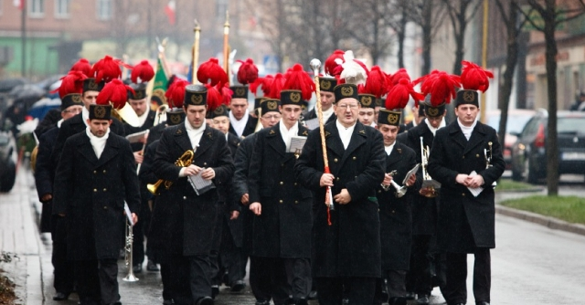
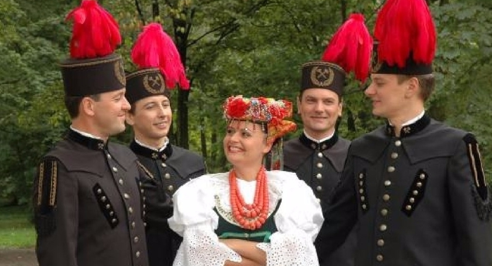
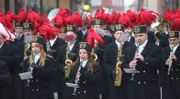

Odkryj piękno barburków razem z nami!
Witaj na corocznym Festiwalu Barburków, gdzie świętujemy kolorową różnorodność i unikalne cechy tych ptaków z różnych zakątków świata. Dołącz do nas na dzień pełen radości, śmiechu i, oczywiście, zachwycającego piękna tych wspaniałych ptaków.
Barbórka (dawna pisownia Barburka[1][2]), Dzień Górnika[3] – tradycyjne święto górnicze, obchodzone w Polsce 4 grudnia, w dniu św. Barbary z Nikomedii[4], patronki dobrej śmierci i trudnej pracy[5]. Poza górnikami Barbórkę obchodzą także geolodzy i inne osoby wykonujące zawody związane z poszukiwaniem paliw kopalnych[6]. W tradycji górniczej Barbórka rozpoczyna się poranną uroczystą mszą w kościele lub w cechowni, przy figurze św. Barbary. Następnie orkiestra górnicza maszeruje grając m.in. swój hymn w osiedlach zamieszkanych przez górników i ich rodziny (np. familok) oraz pod domami dyrekcji. Odbywają się uroczyste akademie oraz spotkania. Z okazji tego dnia organizowane są również: koncerty, występy artystyczne, zabawy oraz bale, w których uczestniczą całe rodziny górnicze.
Zwiedź hipnotyzujące pokazy barburków w ich naturalnym środowisku. Od najmniejszych detali ich piór po ich zgrabne ruchy - każdy moment to uczta dla oczu.
 Chcesz wziąć udział? Przynieś swojego własnego barburka i dołącz do Parady Barburków! Pokaż swojego pióropusza i połącz się z innymi entuzjastami barburków.
